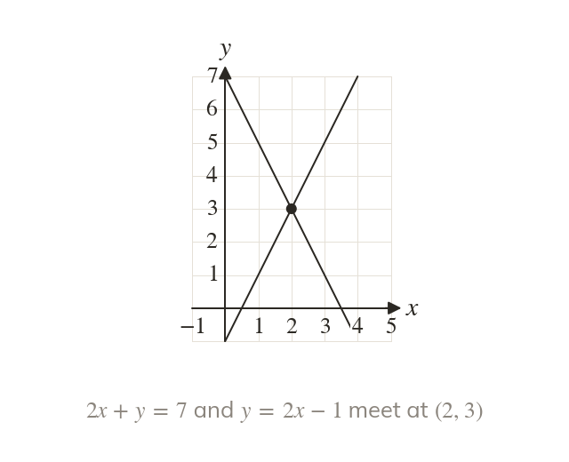
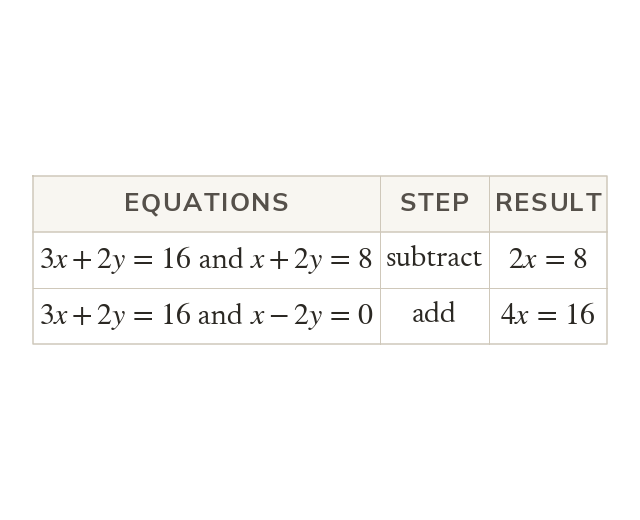
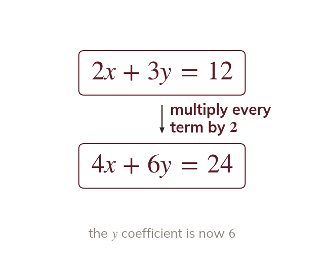
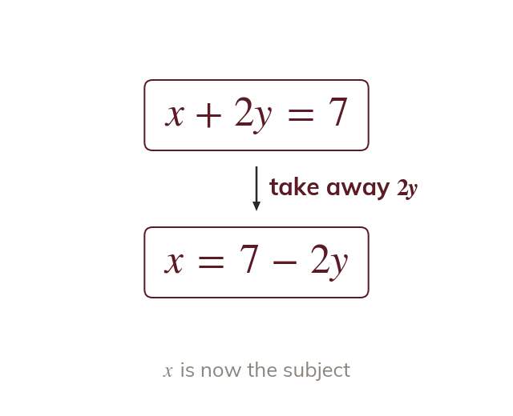
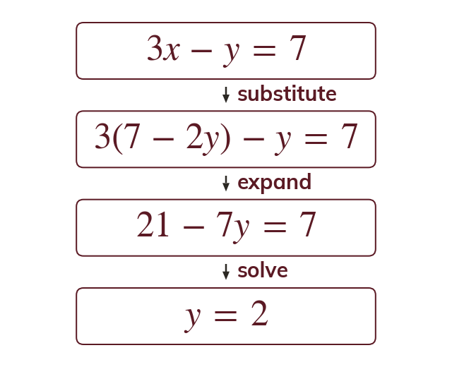
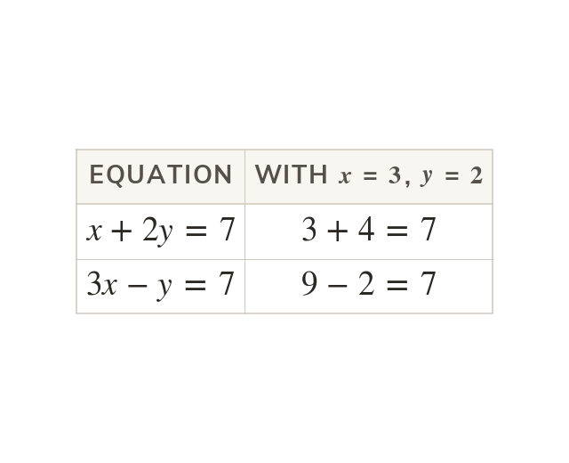

One answer for both lines
A pair of simultaneous equations has one x and one y that make both equations true. On a graph that pair is the point where the two lines cross.
Two equations in two unknowns are solved together, and the answer is the point where their lines meet. Elimination and substitution are both needed next lesson, when one of the equations is a quadratic.
Work down the page at your own pace. Write every answer in your book first, then click to check it.
Read each card, then follow the worked examples one step at a time.

A pair of simultaneous equations has one x and one y that make both equations true. On a graph that pair is the point where the two lines cross.

When one letter has the same coefficient in both equations, subtracting removes it. When its coefficients are opposite, adding removes it.

Multiply one equation, or both, until a coefficient matches. Every term on both sides is multiplied.
Pick an answer. If it's wrong, the feedback tells you which mistake it was.
Write the blanks in your book first, then tap each one to check.
Read each card, then follow the worked examples one step at a time.

Look for a letter with coefficient or one that is already the subject. Rearrange that equation to give it on its own.

Put the expression into the other equation inside a bracket. Then expand and solve for the one letter left.

Putting into gives
The pair should make both original equations true.
Pick an answer. If it's wrong, the feedback tells you which mistake it was.
Write the blanks in your book first, then tap each one to check.
Finished? Next lesson: 3.2 Quadratic Simultaneous Equations.
For each skill, tap the one that is true for you today. Your Revise pages start with anything you mark Not yet.
Your ratings are saved on this device only.
Log in, then search for a code to practise that skill.